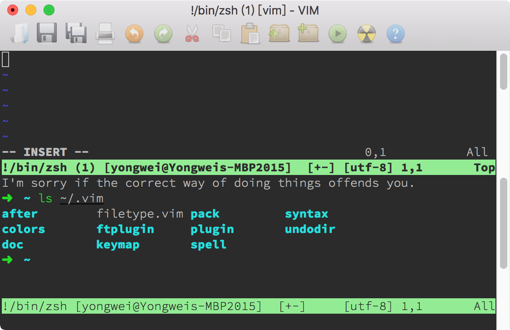
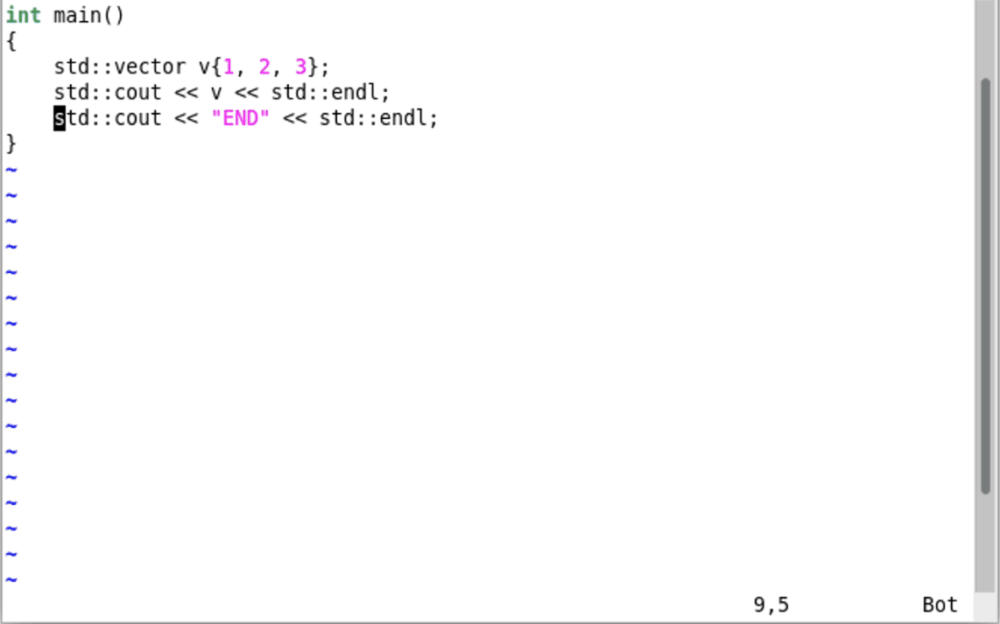

- 00 导读 池建强：Vim 就是四个字“唯快不破”.md.html
- 00 开篇词 我们为什么要学 Vim？.md.html
- 01 各平台下的 Vim 安装方法：上路前准备好你的宝马.md.html
- 02 基本概念和基础命令：应对简单的编辑任务.md.html
- 03 更多常用命令：应对稍复杂的编辑任务.md.html
- 04 初步定制：让你的 Vim 更顺手.md.html
- 05 多文件打开与缓冲区：复制粘贴的正确姿势.md.html
- 06 窗口和标签页：修改、对比多个文件的正确姿势.md.html
- 07 正则表达式：实现文件内容的搜索和替换.md.html
- 08 基本编程支持：规避、解决编程时的常见问题.md.html
- 09 七大常用技巧：让编辑效率再上一个台阶.md.html
- 10 代码重构实验：在实战中提高编辑熟练度.md.html
- 11 文本的细节：关于字符、编码、行你所需要知道的一切.md.html
- 12 语法加亮和配色方案：颜即正义.md.html
- 13 YouCompleteMe：Vim 里的自动完成.md.html
- 14 Vim 脚本简介：开始你的深度定制.md.html
- 15 插件荟萃：不可或缺的插件.md.html
- 16 终端和 GDB 支持：不离开 Vim 完成开发任务.md.html
- 拓展1 纯文本编辑：使用 Vim 书写中英文文档.md.html
- 拓展2 C 程序员的 Vim 工作环境：C 代码的搜索、提示和自动完成.md.html
- 拓展3 Python 程序员的 Vim 工作环境：完整的 Python 开发环境.md.html
- 拓展4 插件样例分析：自己动手改进插件.md.html
- 拓展5 其他插件和技巧：吴咏炜的箱底私藏.md.html
- 结束语 Vim 森林探秘，一切才刚刚开始.md.html
- 捐赠
16 终端和 GDB 支持：不离开 Vim 完成开发任务
你好，我是吴咏炜。
早在 Vim 和 Emacs 的“圣战”时期，Emacs 有个功能可是 Vim 用户一直暗暗垂涎的，那就是可以集成 GDB 来调试程序。Emacs 之所以能够实现这个功能，是因为它可以模拟一个终端环境，像终端一样跟一个程序进行输入输出的交互。这样一来，我们不离开编辑器，也能调试程序，既可以方便地看到目前执行在源代码的第几行，也可以直接在编辑器里跟执行中的程序进行交互。
很多主流的开发环境都支持类似的功能。但 Vim 一直不支持这样的功能，直到 Vim 8。虽然到得有点晚，但 Vim 也算是厚积薄发，利用 libvterm 给出了完整的终端支持。今天，我们就拿终端窗口支持和 GDB 支持，作为我们最后的技术话题来介绍了。
终端窗口支持
基本用法
使用 :terminal（缩写 :term）命令，我们可以在 Vim 的窗口中运行终端模拟器。基本的用法就是下面两种：
- 使用
:terminal，后面不跟其他命令，分割一个新窗口，并使用默认的 shell 程序进行终端模拟；shell 退出后窗口自动关闭（可用使用命令参数++noclose改变这一行为）。 - 使用
:terminal 命令的方式，分割一个新窗口，在其中运行指定的命令并进行终端模拟；命令执行完成退出后窗口不自动关闭，保留执行中显示的信息（可用使用命令参数++close改变这一行为）。
跟其他的多窗口命令一样，:terminal 默认会进行横向分割，但你也可以在 terminal 前面加上 vert 来进行纵向分割，或加上 tab 来把终端窗口打开到一个新的标签页里。
跟 quickfix 窗口里只能看到程序的输出不同，在终端模拟器里我们既可以看到程序的输出，也可以向程序提供输入。同时，这个终端模拟器像一个真正的终端一样，能够支持色彩和其他的文本控制。你甚至可以在里面运行 Vim，就像 Matrix 电影里层层嵌套的世界一样。

当然，从实用的角度，我并不建议你这么做——那样可能会让人头昏，并且容易在使用 <C-W> 和 :q 这样的命令时，出现结果跟自己预想不一致的情况。
终端模拟器的行为应当跟普通的终端一致；因此在 Vim 的终端模拟器里，你可以直接使用的命令跟一般的 Vim 窗口很不一样。毕竟，你在终端模拟器里输入 : 时，肯定不是想进入 Vim 的命令行模式吧？这时候，你需要知道下面这些在“终端作业模式”下的特殊命令（完整列表见 :help t_CTRL-W）：
<C-W>N（注意大写）或<C-\><C-N>退出终端作业模式，进入终端普通模式。这时终端窗口变成一个普通的文本窗口（终端缓冲区），不再显示色彩，但可以像普通的只读窗口一样自由使用，只是不能修改其中的内容而已。按下a或i可重新激活终端模拟器，进入终端作业模式。<C-W>"后面跟寄存器号，表示粘贴该寄存器中的内容到终端里。<C-W>:相当于普通窗口中的:，执行命令行模式的命令。<C-W>.可以给终端窗口发送一个普通的 Ctrl-W。<C-W><C-\>可以给终端窗口发送一个普通的 Ctrl-\。- 大部分的
<C-W>开始的命令仍然可以使用，如窗口跳转命令（后面跟j、k等）、窗口大小调整命令（后面跟+、_等），等等。
需要注意，终端模拟器里的光标只能用正常终端里的光标移动键来移动，比如在 Bash 默认配置下，可以用 <C-A> 或 <Home> 移到行首，用 <C-E> 或 <End> 移到行尾等。在退出终端作业模式后，光标就只是普通文本窗口的光标，不会影响终端模式里的光标位置——在你按下 a 或 i 时，光标还是在原来的位置，而不是退出终端作业模式后你移动到的新位置。你也不能修改终端缓冲区中的内容。只要稍微仔细想一想，你就知道这些是完全符合逻辑的。
当你从终端窗口切到另外一个窗口时，终端窗口里面的程序仍然在继续运行；如果你不退出终端作业模式的话，终端窗口里面的内容也会持续更新，跟正常的终端行为一致。要结束终端运行的话（而不只是临时退出终端模式），也跟普通的终端情况一下，可使用 exit 命令或 <C-D>。如果由于某种原因无法正常退出终端的话，则可以使用 <C-W><C-C> 来强行退出。
使用提示
如果你觉得自己不会在终端里另外启动 Vim，似乎也就很少有机会用到 <Esc> 了，那我们干吗不把这个键用作退出终端作业模式呢？说干就干：
tnoremap <Esc> <C-\><C-N>
tnoremap <C-V><Esc> <Esc>
前缀 t 表示在终端作业模式下的键映射。我们把 <Esc> 映射到我们上面说的退出终端作业模式的快捷键；同时，我们又把 <C-V><Esc> 这一在终端里等价于 <Esc> 的按键组合映射为 <Esc>，这样万一我们需要 <Esc>，仍然可以用一种较为自然的方式获得这个按键。
遗憾的是，在 Unix 终端的情况下，很多功能键本身包含 <Esc>，因而会误触发这个键映射。对于这种情况，我们使用下面的键映射，用连按两下 <Esc> 退出终端作业模式效果更好：
tnoremap <Esc><Esc> <C-\><C-N>
此外，对于大部分人而言（像 Bram 这样，用 Vim 调试 Vim，不属于大众需求吧），在 Vim 的终端模式里启动 Vim，恐怕是失误的可能性最大。为了防止这样的失误发生，我们可以在 Vim 启动时检查一下，检测这种嵌套的 Vim 使用。你只需要把下面的代码加到 vimrc 配置文件的开头即可：
if exists('$VIM_TERMINAL')
echoerr 'Do not run Vim inside a Vim terminal'
quit
endif
你可以试验一下在 Vim 的终端窗口里再运行 Vim，看一下上面的代码产生的出错效果。
终端的用途
说了这么多，你可能有点疑惑，单独起一个终端有什么问题吗？我为什么要在 Vim 里运行终端呢？
我是这么理解的：
- 方便。特别在远程连接的时候，有可能新开一个连接在某些环境里需要特别的认证，比较麻烦。即使连接没有任何障碍，你总还需要重新 cd 到工作目录里吧？而如果在一个现有的 Vim 会话里开一个新的终端，可以一个命令搞定，然后用你已经很熟悉的 Vim 命令在不同的窗口或标签页里切换。
- 文本。我们可以从终端作业模式切换到终端普通模式，然后用我们熟悉的 Vim 命令来对缓冲区中的文本进行搜索、复制等处理工作。
- 控制。你可以发送命令给终端，也可以读取终端屏幕上的信息。这样，事实上就打开了一片新天地，可以在 Vim 里做很多之前做不到的事情，比如，用 Vim 来比较两个屏幕输出的区别（
:help terminal-diff）。
终端窗口相关的函数名称都以 term_ 打头（可以查看帮助文件 :help terminal-function-details）。比如，如果我们想要用程序向缓冲区编号为 2（可以用 :ls 和 :echo term_list() 等命令来检查）的终端发送 ls 命令来显示当前目录下的文件列表的话，我们可以使用（注意转义字符序列要求使用双引号）：
call term_sendkeys(2, "ls\n")
下面这个比较无聊的例子，可以用来获取 ~/.vim 目录下的文件清单：
let term_nbr = term_start('bash')
call term_wait(term_nbr, 100)
let line_pos1 = term_getcursor(term_nbr)[0]
call term_sendkeys(term_nbr, "ls ~/.vim|cat\n")
call term_wait(term_nbr, 500)
let line_pos2 = term_getcursor(term_nbr)[0]
let result = []
let line_pos1 += 1
while line_pos1 < line_pos2
call add(result, term_getline(term_nbr, line_pos1))
let line_pos1 += 1
endwhile
call term_sendkeys(term_nbr, "\<C-D>")
while term_getstatus(term_nbr) != 'finished'
call term_wait(term_nbr, 100)
endwhile
exe term_nbr . 'bd'
echo join(result, "\n")
这当然不是完成这件任务的最好方法，但上面的代码展示了终端相关函数的一些基本用法：
- 我们用
term_start命令创建一个新的终端，得到终端缓冲区的编号 - 我们用
term_wait等待 100 毫秒，待其就绪 - 我们用
term_getcursor获取光标的当前行号 - 我们用
term_sendkeys发送一个命令到终端上；ls 之后用 cat 是为了防止 ls 看到输出是终端而产生多列的输出 - 然后我们等待命令执行完成并更新终端
- 我们获取光标的当前位置，然后用
term_getline获得上一次的行号和这一次的行号之间的行的内容，放到变量result里 - 我们然后发送一个
<C-D>到终端，结束作业 - 然后我们等待到
term_getstaus返回的状态成为'finished'，即终端作业已经执行结束 - 最后我们用缓冲区编号加
bd命令删除缓冲区（所以屏幕上我们看不到这个终端窗口），并用换行符作为分隔符打印 ls 返回的内容
你可以实际测试一下这个脚本，体会一下这些基本功能。比如，可以把脚本存盘为 test.vim，然后用 :so % 来运行。
GDB 支持
为什么 Vim 直到最近才支持 GDB 呢？因为这真不是件容易的事情啊。为了能在 Vim 里顺畅地使用 GDB，Bram 需要在 Vim 里实现下面这些不同的功能：
- 终端支持
- 作业（job）和通道（channel）
- 窗口工具条、弹出窗口和弹出式菜单
有了这些功能之后，Vim 通过一个内置的插件，就可以提供 GDB 的调试支持了。我们可以通过 :packadd termdebug 命令来加载这个插件，然后通过 :Termdebug 可执行程序名称 来调试一个可执行程序。
下面这个动图可以说明最主要的流程：

我简要说明一下需要注意的几点：
:Termdebug命令会把屏幕分成三个区域，从上到下分别是 gdb 命令行，程序输出，以及含调试控制按钮的源代码窗口。- 在最上面的 gdb 窗口中，我们可以输入 gdb 的命令，但程序的输出和纯终端使用 gdb 的情况不同，是在中间的窗口输出的。
- 最下面的的源代码窗口里，我们有五个按钮可以用，允许习惯图形界面的用户使用鼠标进行操作。我们也可以使用鼠标右键直接在源代码行上设置断点。（当然，我们仍然可以在最上面的 gdb 窗口用命令来完成这些任务。）
- 鼠标在变量上悬停时，可以显示变量的值。只要 gdb 能打印的信息，它就能用浮动提示显示出来。这比手工使用 gdb 的
p命令还是要方便多了。
还有一个需要稍微注意的地方是，如果你在不同的作用域有两个同名变量，那浮动提示只能显示当前作用域的变量的信息，即使你把光标放到不在当前作用域的变量上也是如此。这点上，Vim 还是比较笨的——毕竟它不理解代码。
内容小结
这讲我们介绍了 Vim 8 带来的新功能：终端支持。这个功能给 Vim 打开了一片新的天空。使用终端支持，我们可以不离开 Vim 打开一个或多个新的终端窗口，里面可以模拟真正的终端功能，包括色彩控制。我们可以使用 Vim 命令来处理新的终端缓冲区中的文本。我们还可以利用代码来控制这个终端和读取其中的内容。有了这些支持，Vim 也就顺理成章地支持使用 GDB 像集成开发环境一样地调试程序了。
根据我个人的经验，在使用了这个功能之后，我开启新远程连接比之前少了，而经常在一个服务器上只开一个连接，里面开一个 Vim 来完成所需的任务。编译和执行，可以全部在这个 Vim 会话里完成。
本讲我们的配置文件中加入了针对终端窗口的键映射和防 Vim 重入，对应的标签是 l16-unix 和 l16-windows。
课后练习
请尝试使用 :terminal 命令，打开一个新窗口，并在其中进行操作，然后退出终端作业模式，把终端缓冲区中的内容复制到新的缓冲区中。
如果你使用一种可以用 GDB 调试的编译语言的话，也请你尝试一下使用 :Termdebug 命令进行调试。如果你之前用的是纯命令行的 gdb 的话，这个功能还是有很大的易用性提升的。
最后，同样地，如果有任何问题或疑问，欢迎留言和我讨论！
我是吴咏炜，让我们在告别这个课程之前，再道一次再见。
© 2019 - 2023 Liangliang Lee. Powered by gin and hexo-theme-book.